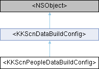

辅助场景中人物数据的创建配置 More...
#include <KKScnDataProtocol.h>
Inheritance diagram for <KKScnPeopleDataBuildConfig>:

Properties | |
| CIImage * | ciSceneInput |
| CGRect | renderCIRoi |
| KKSalientMatte * | salientMatte |
| KKPortraitMatte * | portraitMatte |
| 有可能使用KKPortraitEffectsMatte覆盖 | |
 Properties inherited from <KKScnDataBuildConfig> Properties inherited from <KKScnDataBuildConfig> | |
| NSDictionary * | imagePropertyInfo |
| 图片属性 | |
| KKVirtualCamera * | virtualCamera |
| 虚拟相机 | |
Detailed Description
辅助场景中人物数据的创建配置
Property Documentation
◆ ciSceneInput
|
readwritenonatomicretain |
Vision场景检测对象的输入 优化尺寸可以加快速度， 在Visoin perform时会消耗内存，是否可以创建多个版本的ciSceneInput来减少perform时创建出的内存？
◆ salientMatte
|
readwritenonatomicretain |
显著区域蒙版 通用数据不直接和人像相关
The documentation for this protocol was generated from the following file:
- Shine/Shine/Sections/ImportMediaSection/Protocol/KKScnDataProtocol.h